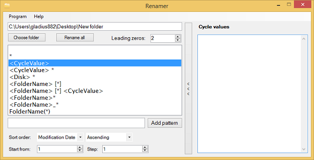

Cycle values are special feature that allow you to insert text in each filename from user defined list. It's allow you to assign unique name for each file. To use it you must slide additional menu by right side of program. You can do this using button marked as 12. After button is clicked menu will appear, as you can see below.

On shown list you can write any text allowed in file's name. Every value is separated by new line. After list is filled it's ready to use and if other required fields has been filled, you can start renaming.
In case when count of values on list is smaller than number of files you want to rename application will assign cycle values again starting from top list.